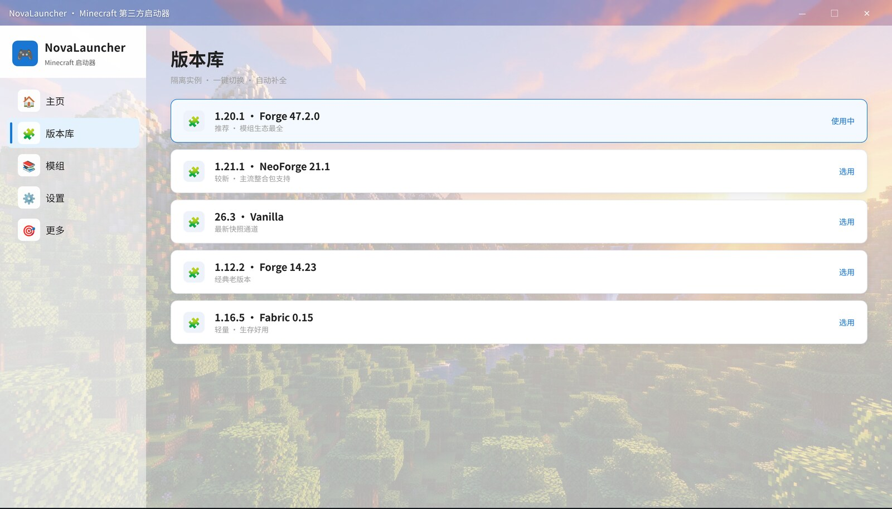
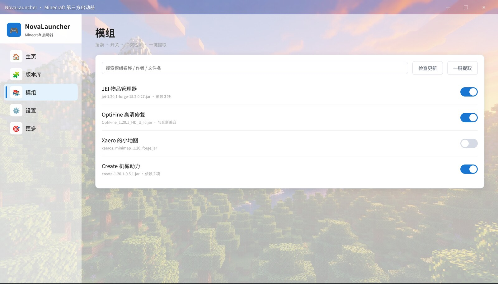
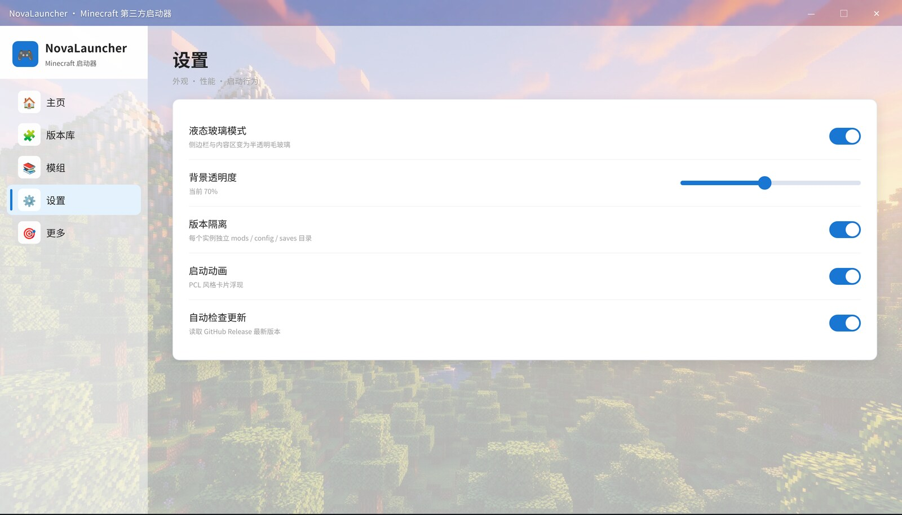

它替你处理掉的那些麻烦
不是把官网下载地址换个皮，而是把每次启动前真正会卡住人的环节做进了流程里。
三种登录，离线也能玩
离线用户名、微软账号、外置登录（authlib-injector）在同一张卡片里切换，切换后自动带出对应皮肤与用户名，不用记 API 地址。
Forge / Fabric / Quilt / NeoForge
安装弹窗里直接选加载器与游戏版本，自动匹配对应加载器版本号，下载完写入版本库即可启动，不必手搓 JSON。
模组冲突检测与依赖排序
导入 mods 后扫描前置依赖、重复模组与版本冲突，按依赖关系排序提示从未加载的那一个，而不是丢一句"游戏崩了"。
存档导入、导出与备份
直接把 world 文件夹拖进来即可导入；一键导出为 zip 分享给朋友，启动前自动留一份备份，玩坏了能回滚到上一次。
崩溃自动分析
读取 latest.log 与 crash-report，定位到具体模组、缺失依赖或内存不足，并给出可执行的修复建议，而不是让玩家自己翻日志。
自动更新，静默替换
启动时比对 GitHub 发布的最新版本，只下载与本机架构匹配的完整包，校验后替换自身，下次打开就是新版。
界面不是贴上去的皮肤
每个页面都为一件具体的事服务：找到版本、看清模组、调好参数、确认能进游戏。




背景是你的世界，界面让开
启动器整层铺一张方块世界的高清背景，侧边栏与内容区做成半透明毛玻璃。透明度、深色导航、液态玻璃都能在设置里单独调，调到你自己眼睛舒服为止。
液态玻璃模式
开启后，面板边缘出现折射高光、内部带轻微透镜位移，像 iOS 上的玻璃控件。拖动下面的滑块，背景透出程度会实时变化。
四个安装包，按你手上的机器选
桌面版是自包含压缩包，解压即用、不需要安装 .NET；手机版是原生 APK 安装包，包内自带整套界面，断网也能启动。
更新日志
启动器每 24 小时检查一次发布，桌面版只下载与自身架构匹配的完整包。
手机版 3.3.1 移动端
- 新增原生网络桥，修复包内检查更新被跨域拦截失败的问题
- 横屏 / 竖屏两个安装包，同签名可直接覆盖升级
- 界面整包内嵌，断网状态下同样可以进入启动页
桌面版 3.2.2 桌面端
- 自动更新改为架构感知，避免在 Apple 芯片上下到 Intel 包
- 模组搜索支持按加载器过滤，结果为空时给出原因提示
- 启动日志增加下载进度行，长时间无响应可看到具体卡点
桌面版 3.2.1 桌面端
- 液态玻璃模式上线，标题栏与侧边栏同步半透明
- 整层高清方块世界背景，透明度可在设置中调整
桌面版 3.2.0 桌面端
- 更多页面加入今日人品与「千万别点」，还原同类启动器的彩蛋
- 崩溃分析支持直接读出出错的模组文件名
常见问题
遇到没写在这里的情况，去仓库开一个 issue，附上 latest.log 会快很多。
01压缩包解压后打不开 / 被杀毒软件拦了+
桌面版是自包含程序，解压整个文件夹后双击里面的可执行文件即可，不要只把单个 exe 拖出来。程序没有签名证书，部分安全软件会先拦截，放行一次再把文件夹加进信任列表就好。如果提示缺少运行库，说明解压时被杀软删掉了目录里的依赖文件，重新解压一次并关闭实时防护。
02手机版提示「应用未安装」或解析包出错+
先确认下的是横屏还是竖屏包，两者包名相同、签名相同，可以直接覆盖升级。如果之前装过其他来源的同名版本，需要先卸载。安卓 8.0 以下不支持，8.0 及以上都能装。
03为什么模组搜不到+
模组检索走的是公开源，需要联网，并且要匹配当前选中版本的加载器（Forge 与 Fabric 的模组互不相通）。搜索无结果时先看版本是否选对，再看网络是否能访问外网。国内网络不稳时换用离线导入：把 jar 直接放进 mods 文件夹，启动器会扫描并做依赖排序。
04检查更新报 github.com:443 连接失败+
这是访问 GitHub 发布页失败，通常是网络或 DNS 问题，和启动器本身无关。可以挂代理后重试，或者直接到发布页手动下载对应平台的完整包覆盖，配置与存档都在独立目录里，不会被覆盖。
05会收集我的数据吗+
不会。启动器不发送遥测，账号凭据只保存在本地。网络请求只有三类：游戏与加载器文件下载、模组信息检索、版本更新检查。
下一步是双击那个图标
下载对应平台的压缩包或安装包，解压、打开、选版本，然后进游戏。